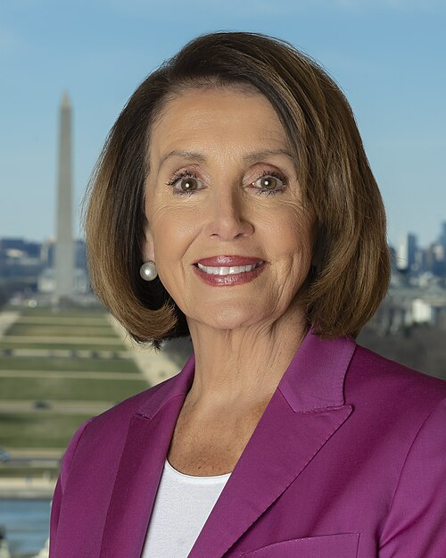

Interactive version of a research paper
Adding Fuel to the (Gun)Fire
After a mass shooting, people go online to grieve, ask questions, and argue. We followed 4.75 million tweets about 57 shootings in the United States. Once a politician with more than a million followers tweets about the shooting, the conversation shifts. Within two hours, partisan phrases appear in about 2.0% of tweets instead of 1.1% (almost twice as often), and issue-polarized words in about 10.9% instead of 7.8% (40% more often).
Content note. This story is about how people talked online after mass shootings. It names the shootings and where they happened, but shows no images and no details about victims. Every tweet on this page is real and quoted word for word, but shown as a text recreation, not a screenshot; times are local. We do not name the private person who posted the first one, in chapter 1. How we chose the 57 shootings.
Short on time? The key findings in 2 minutes
1. After a politician with more than a million followers first tweets about a shooting, more tweets use partisan and issue-polarized language. Partisan phrases go from 1.08% of tweets to about 2.0% two hours later (+0.96 percentage points); issue-polarized words from 7.75% to about 10.9% (+3.1 points).
2. We find no comparable shift after celebrities tweet, and no statistically clear rise in hostile language or in the number of tweets.
3. The rise is larger when the politician’s own tweet contains a partisan phrase, which fits the paper’s explanation that politicians supply the language. The rise comes from users posting about the shooting for the first time after the politician’s tweet.
Limits: 57 nationally covered U.S. shootings on Twitter, 2016–2022. We measure words in tweets, not beliefs, and we do not see who read the politician’s tweet. Shaded bands: 95% confidence intervals.
About 10 minutes. Scroll to move through the story. explains how we count partisan and issue-polarized language.
1 · Minute zero
One debate, minute by minute
On May 24, 2022, a gunman attacked Robb Elementary School in Uvalde, Texas. Scroll to move the clock through the first five hours of the conversation on Twitter.
An animated timeline of the first five hours of tweets about the Uvalde shooting, one dot for every 20 tweets, from the first tweet at 12:08 p.m. Central time. It marks the first news tweet (50 minutes in), the first political intervention (2 hours 51 minutes), the first celebrity tweet (3 hours 36 minutes), and the second political intervention (4 hours). The step cards describe each moment, and the table in the last card gives the numbers.
12:08 p.m. The first tweet about the shooting appears, 40 minutes after the attack began.Across all 57 shootings, the first tweet typically comes about 20 minutes after the attack begins. It reads:
Prayers for Uvalde😞
Literally sick to my stomach.
50 minutes in, NBC News posts:NBC News is the first news organization with more than a million followers to tweet about the shooting. In the typical debate, the first news tweet comes about 35 minutes after the first tweet, and about 90 minutes before the first political intervention.
DEVELOPING: Police are responding to an active shooter at a Texas elementary school, Uvalde Consolidated Independent School District says.
Two hours in. Thousands of people have tweeted. No politician with more than a million followers has posted yet.
2 h 51 min. Ted Cruz, U.S. senator for Texas, posts about the shooting.He is the first politician with more than a million followers to tweet about it. In the typical debate, the first political intervention comes 2 h 15 min after the first tweet.
Heidi & I are fervently lifting up in prayer the children and families in the horrific shooting in Uvalde.
We are in close contact with local officials, but the precise details are still unfolding.
Thank you to heroic law enforcement & first responders for acting so swiftly.
The paper calls this the first political intervention: the first tweet about a shooting by a politician with more than a million followers. The rest of the story is about what happens after it.
Now the dots take the colour of the language in the tweets they stand for.Each dot stands for 20 tweets. Amber dots stand for tweets with a partisan phrase, including those that also have an issue-polarized word; teal dots for tweets with an issue-polarized word and no partisan phrase. So the teal dots alone undercount issue-polarized tweets; the table at the end gives both shares in full.
Partisan phrases are phrases that one party in Congress uses far more than the other, such as “gun violence” or “tax relief”.
Issue-polarized words mark a side in a policy fight, such as “gun control”, “NRA”, or “leftist”.
3 h 36 min. A celebrity with tens of millions of followers posts. As you will see, we find no comparable shift in language after celebrities’ tweets.
4 h 00 min. A second politician posts. Within the next hour, eight more follow.
Two hours after the first political intervention, per 1,000 tweets:
| hour before | hour 1 after | hour 2 after | |
|---|---|---|---|
| partisan phrases | 20 | 23 | 33 |
| issue-polarized words | 162 | 201 | 245 |
But this is one debate, and in Uvalde the conversation kept growing as the news got worse. Does the same happen after other shootings?
52 debates, one moment
52 rows, one per debate with a political intervention, each showing how tweeting rose and fell in the first 12 hours. The first political intervention comes between half an hour and almost a day after the first tweet, after 2 hours 15 minutes in the typical debate. As you scroll, the rows slide so that every first political intervention sits on one vertical line.
Each row is one debate, from its first tweet to 12 hours later. Its shape shows how tweeting rose and fell, relative to that debate’s own peak, so rows do not compare the size of debates. The marks the first political intervention.
In 52 of the 57 shootings, a politician with more than a million followers tweeted. When varies a lot: from half an hour to almost a day after the first tweet, 2 hours 15 minutes in the typical debate. One debate (Townville, South Carolina) has its first political intervention about 23.6 hours in, beyond this 12-hour view; a › at the right edge marks it.
Now slide each row so that its first political intervention sits on the same line.
Left of the line is before the politician posted; right of the line is after.
2 · What happens next
A politician with over a million followers just tweeted about the shooting. What happens next?
Zero is the 10 minutes before the tweet. The shaded band is a pointwise 95% confidence interval for each 10-minute window, measured against that reference window. A smooth line is not by itself evidence of an effect.
Show on the baseline level (estimated effect + average before politicians tweet)
The line shows the paper’s estimate of how much more common this language is in each 10-minute window than in the 10 minutes before the tweet (Figure 3), drawn on top of the average share before politicians tweet (Table 2) to give a sense of scale. It is an estimate, not a raw average of the debates.
How the comparison works
We compare tweets within the same debate before and after its first political intervention, and debates at the same stage, measured from their first tweet: some already past their politician’s tweet, some not yet, and five that never get one. Fixed effects for each shooting absorb what stays the same within a debate; fixed effects for each 30 minutes since the debate began absorb the usual rise and fall of a debate. The key assumption: without the politician’s tweet, a debate’s language would have kept evolving like that of debates at the same stage that had not yet been treated.
Issue-polarized words
+17% in the first hour, +40% by the second
From 78 to 91, then 109 tweets in 1,000. They start more slowly. Beyond the 4 hours charted here, hourly estimates (the paper’s Appendix Figure A.12) keep climbing for about 10 hours, then stay at that level through the 15 hours the paper follows.
Partisan phrases
+43% in the first hour, +88% by the second
From 11 to 15, then 20 tweets in 1,000. They rise within minutes and level off after about 4 hours; in the paper’s Appendix Figure A.12 they stay higher through the 15 hours it follows.
We also built a second measure of issue polarization with language models, which reads the meaning of a tweet rather than matching words. It finds the same rise, on both the left and the right.
The shaded bands show the 95% confidence range. Before the tweet we find no statistically detectable trend in either measure. That supports the design but cannot prove it: a change could start exactly when the politician posts for another reason. Chapter 7 comes back to this.
3 · Lenses, not anger
Does the debate also get angrier?
We ran the same comparison for three more kinds of language. Only one moves.
What it counts
Words about loyalty and betrayal.
It creeps upward after the politician tweets, and is clearly higher in the second hour.
What it counts
Hostile, moral-emotional words that express dislike of the other side.
No statistically clear increase detected.
What it counts
Slurs and hostile terms aimed at groups. We do not show examples.
No statistically clear increase detected.
Read together: after politicians tweet, more tweets frame the shooting in partisan and policy terms; we detect no rise in hostile language.
Each kind of language is compared before and after the first political intervention. Tribal language is clearly higher in the second hour; over the whole week the rise is smaller and not statistically clear. The paper shows the full charts in its appendix.
4 · Is it just fame?
No comparable shift after celebrities tweet
Maybe any famous account would have the same effect. We ran the same comparison for 61 celebrities with more than 25 million followers each, such as athletes, artists, and business figures. When one of them tweets about a shooting, we detect no statistically clear change in either measure. Celebrities differ from politicians in audience, timing, and role, so this comparison is suggestive rather than a clean test of fame.
Each chart shows the change from the 10 minutes before the tweet, with a 95% confidence band, over the same time window as the paper’s figure.
Do politicians draw more people in?
Do politicians simply draw more people into the conversation? We detect no statistically clear change in the volume of tweets after the first political intervention. The shift is in the language of the debate, not in how many tweets are posted.
Each chart shows the change from the 10 minutes before the tweet, with a 95% confidence band, over the same time window as the paper’s figure.
5 · What politicians bring
Politicians use the words that become more common

Nancy Pelosi@SpeakerPelosireal tweetOur hearts break for the victims of today’s shooting in Aberdeen, MD. The daily scourge of gun violence is tearing apart families, and yet Republicans in Congress refuse to take action to end the suffering. Enough is enough. It’s time for real action.
The highlights show one partisan phrase and one issue-polarized word. Tweets like this are common among politicians and rare among everyone else.
That is about 16 times as often. Across all their tweets, politicians are about 17 percentage points more likely than celebrities or news outlets to use partisan phrases, and 19 points more likely to use issue-polarized words.
Partisan tweets move both measures
When the first political intervention contains a partisan phrase, the debate that follows becomes more partisan and more issue-polarized than when it does not. Issue-polarized words in the politician’s tweet make no such difference.
6 · Who changes
The rise comes from users posting about the shooting for the first time after the politician
We split the tweets after the first political intervention by who wrote them. People who had already tweeted about the shooting before the politician show no clear change in their language. The rise comes from users whose first tweet about that shooting comes after the politician’s.
The rise is larger among users who describe themselves in political terms in their profile, with identity words such as “Democrat”, “conservative”, “MAGA”, “progressive”, “feminist”, or “Black Lives Matter”. About one tweet in nine comes from such users. Users without these words in their profile shift too, but less.
In both splits, the difference between the two groups is statistically significant at the 5% level for both measures (Appendix Table A.20).
7 · How we know
The skeptic’s sandbox
“Maybe politicians just tweet when the debate is already heating up.”
If that were true, the rise would come from the debate, not from the politician. Chapter 2 showed one answer: we find no statistically detectable trend in the two hours before the tweet. Here are three more tests from the paper. Try each one.
1When did they tweet?
What this check tests, and what it cannot rule out
- Concern
- Maybe politicians post when a certain kind of shooting or debate is under way.
- What we test
- We test whether 20 traits of the shooting, the debate, and the politician predict when the first political intervention comes.
- What it cannot rule out
- traits we do not measure, and small differences that 52 debates are too few to detect.
Result: Of 20 traits, only the politician’s party is clearly linked to timing: Republicans’ first tweets come earlier.
One row per debate. Politicians post at very different times, always after the news outlets. Sort the rows by a trait of the shooting or the debate and look for a pattern.
first news tweetfirst political interventionfirst celebrity tweet
The paper tests 20 traits of the shooting, the conversation, and the politician. The kind of shooting does not predict when the first political intervention comes. Explore all 20 in chapter 8.
2Did news break just before?
What this check tests, and what it cannot rule out
- Concern
- Maybe a news update, not the politician, shifts the debate.
- What we test
- We test whether news outlets’ share of tweets rises before the political tweet, and whether their tweets just before it more often report deaths or the shooter.
- What it cannot rule out
- news that outlets did not tweet about, or other events at the same moment.
Result: No rise in news activity before the tweet.
Maybe politicians post right after a big news update, and the update, not the politician, changes the debate. If so, news outlets would post more just before the political tweet. We find no rise in their share of the conversation in the hour before. We also checked whether news tweets in the 30 minutes before more often report deaths, the victims, the shooter’s identity, age or race, the weapon, or the motive; they do not. These checks reduce the concern, but they cannot rule out every unobserved event at the same moment.
Change in the share of debate tweets posted by news outlets, compared with the 10 minutes before the political tweet. The paper also finds that news tweets in the 30 minutes before the political tweet are no more likely than at random times to report deaths or details about the shooter.
3Drop a shooting
What this check tests, and what it cannot rule out
- Concern
- Maybe one famous shooting drives the result.
- What we test
- We test the estimate again, leaving out each of the 57 shootings in turn.
- What it cannot rule out
- a problem shared by many shootings at once.
Result: All 57 estimates stay positive and close to the estimate with every shooting.
Maybe one famous shooting drives everything. Leave any one out and see the estimate from the other 56.
Each of the 57 dots is the estimate with one shooting left out; the black line is the estimate with all 57 shootings in the same model. That model is simpler than the headline one: like the paper’s Appendix Figure A.9, it leaves out the control for the hour before the tweet. So the line (+8.1 and +26.4 per 1,000) sits a little above the Table 2 estimates (+7.1 and +24.3). What matters is that no single shooting moves the estimate far from the line.
The paper has more checks: the results hold when we control for news activity, for other follower cut-offs, and under formal tests for trends before the tweet.
8 · The shootings
57 shootings, 52 with one or more political interventions
We study 57 mass shootings. After 52 of them, at least one politician with more than a million followers tweeted. After the other 5, no such politician tweeted. The main estimates use all 57 debates: the 5 without a political intervention add comparison tweets, and the timing charts show the 52 with one.
How we chose them. We include every mass shooting that made the front page of The New York Times between March 1, 2016, when Twitter introduced its algorithmic timeline, and October 27, 2022, when Elon Musk bought the company. We chose by national coverage, not by a victim count, so the sample is not representative of all mass shootings, and many less-covered shootings are excluded. For 2021–2022 we checked the list against the front pages of The Washington Post, the Los Angeles Times, The Wall Street Journal, and USA Today. For each shooting we collected every original English-language tweet (no retweets) that named the event and its location, for seven days after the first one.
Does the kind of shooting decide when politicians post?
The design works only if politicians do not time their first tweet to the kind of shooting or to the state of the conversation. Point at or tap a trait: the shootings that have it light up, and the chart below shows how much earlier or later the first political intervention came in those debates. Tap a symbol to see the shooting.
Point at or tap a trait above.
The grey dots are all 20 traits; the dark dot, when you select one, shows its 95% confidence range. Most sit close to zero, and only one of the 20, the politician’s party, is statistically clear: Republicans’ first tweets come earlier. With 52 debates, smaller differences could go undetected, so this shows no strong link between these traits and timing; it does not show that timing is random. From Table 1 of the paper.